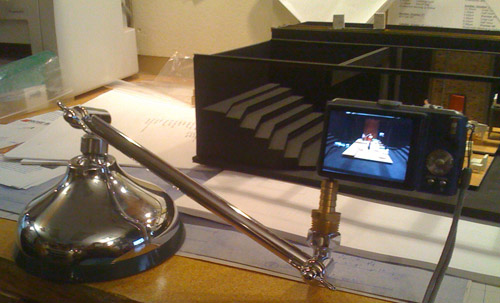
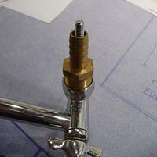

I like to take detailed pictures of the scene designer’s model for each set we build. Inevitably the director and stage managers want the model in rehearsal, and it becomes difficult to share. Things get really hairy when the scenic charge wants a piece of the action.

 Obviously, the stiller the camera, the clearer the picture. I set out to find a secondhand something I could use as a monopod. Let this be a lesson: ask a prop person for a monopod, and you’ll get a showerhead. Thanks Billy! Its the best free showerhead I’ve ever received, I’m glad I didn’t waste money on a monopod. After making a quick & dirty adapter to fit the camera, this baby can perform more wacky positioning and tilting maneuvers than the “actors” on those scrambled channels. (You know the ones I’m talkin' about.) For those curious folks, the adaptor is a 1/4" flat head bolt epoxied into a pipe-to-hose adaptor. Since the items were in stock, it was mighty cheap.